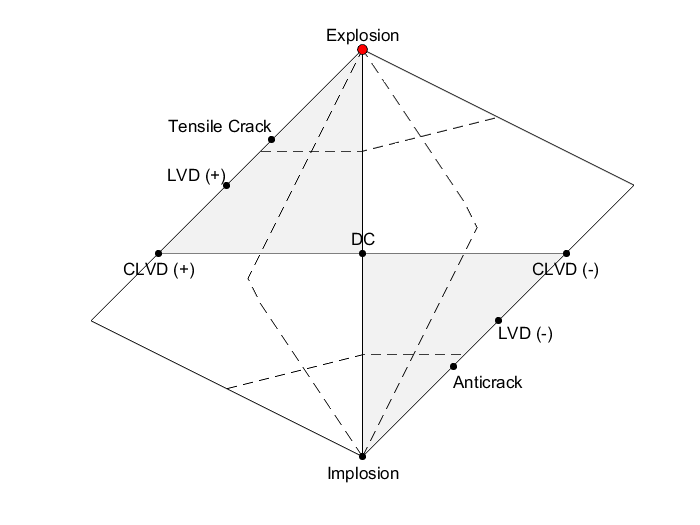
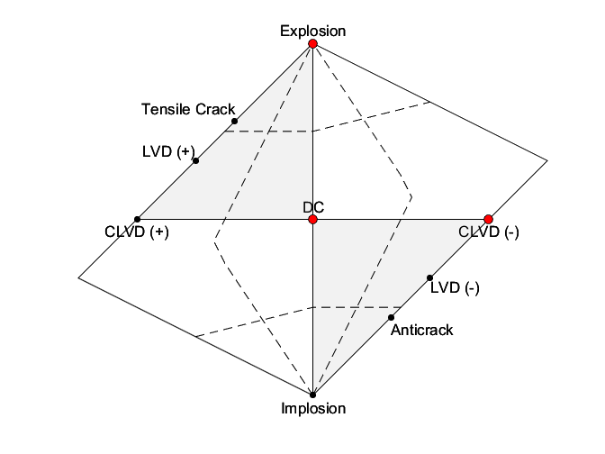

drawhudsonnet
Hudson plot
Contents
Syntax
drawhudsonnet; [U,V] = drawhudsonnet(M); drawhudsonnet(M);
Description
Use drawhudsonnet allows either to generate a Hudson plot figure following the Hudson, J.A., R.G. Pearce, and R.M.Rogers (1989), "Source type plot for inversion of the moment tensor", J. Geophys. Res., 94, 765–774. or to project (and eventually plot) moment tensor data to [u,v] space of Hudson network.
drawhudsonnet with no arguments just produce a bare Hudson plot.
[U,V] = drawhudsonnet(M) produce a Hudson plot and project moment tensor data into the [U,V] space. Vectors U and V can be than used to plot the pointsin the generated figure, e.g. by calling: plot(U,V,'ok'); The input moment tensor matrix M may be in one of the following formats:
- 3-by-3 matrix containing full moment tensor in a form M = [m11 m12 m13; m21 m22 m23; m31 m32 m33] (note the moment tensor must be symmetric, i.e. m12=m21, m32=m23 and m31=m13).
- n-by-6 matrix where each row corresponds to a different moment tensor Each row contains 6 independent moment tensors components in the following format: M(i,:) = [m11 m12 m13 m22 m23 m33].
- n-by-9 matrix where each row corresponds to a different moment tensor. Each row contains 9 moment tensor components in the following format: M(i,:) = [m11 m12 m13 m21 m22 m23 m31 m32 m33]. In this case columns [4 7 8] are ignored and matrix is reduced to n-by-6 matrix.
drawhudsonnet(M) with no output arguments handling produces a Hudson plot and immediately projects moment tensor data onto Hudson plot.
Examples
The following code generate a Hudson plot and project single moment tensor in the form [1 0 0; 0 1 0; 0 0 0] onto it:
drawhudsonnet(eye(3));
The following code generates a Hudson plot and projects three moment tensors onto it. The three moment tensors correspond to pure positive Isotropic, double-couple and negative CLVD moment tensor:
drawhudsonnet([1 0 0 1 0 1; 0 0 1 0 0 0; 1 0 0 1 0 -2]);